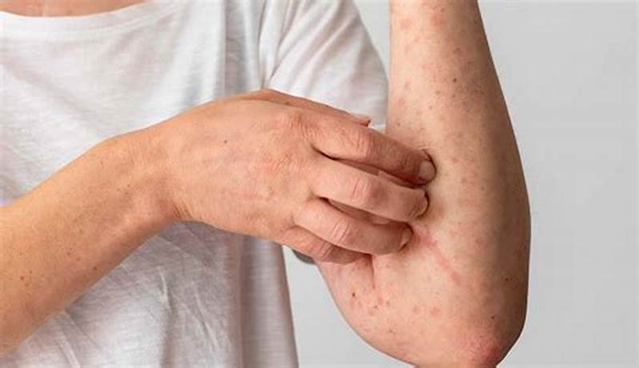
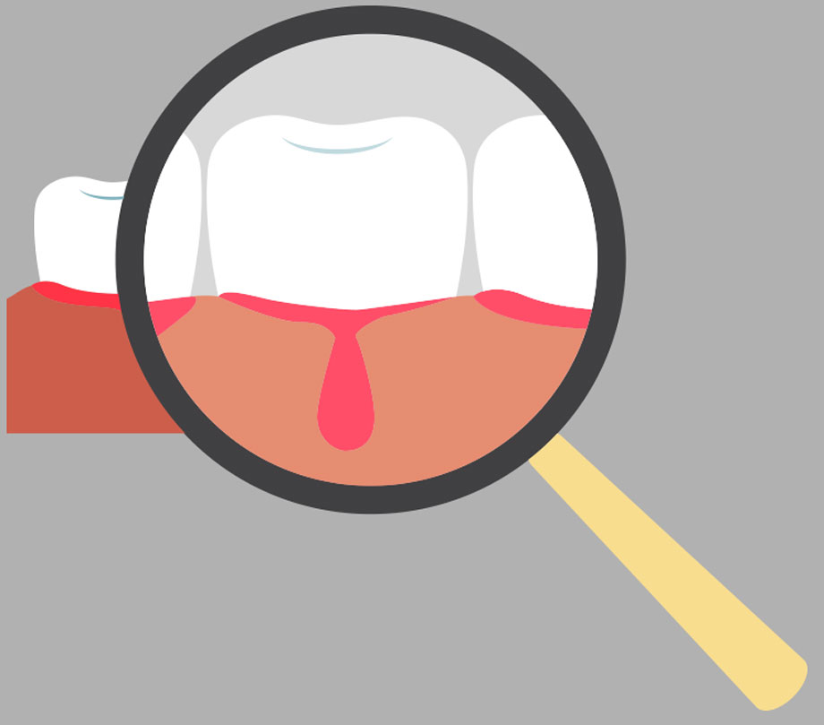

Una vez que una persona es picada por un mosquito portador del virus, el periodo de incubación suele oscilar entre 4 y 7 días. Existen cuatro variantes del virus del dengue (DEN-1, DEN-2, DEN-3 y DEN-4), las cuales provocan los mismos signos clínicos, lo que impide diferenciarlas solo por los síntomas. Es posible que una persona infectada no presente señales evidentes de la enfermedad, especialmente en niños y adolescentes.En quienes desarrollan síntomas, el dengue puede manifestarse de dos maneras: como dengue clásico o como dengue grave (anteriormente conocido como dengue hemorrágico).
El dengue clásico se presenta con fiebre elevada, acompañada de intensos dolores de cabeza, molestias oculares, fatiga extrema y dolor muscular y óseo, lo que ha llevado a que se le conozca popularmente como "fiebre rompehuesos".
Un signo frecuente es la aparición de un sarpullido con manchas rojizas, que se localizan principalmente en el tórax y las extremidades, y que pueden desaparecer de forma temporal. Esta erupción cutánea suele manifestarse alrededor del tercer día desde el inicio de la fiebre.

Es importante destacar que algunas personas con dengue clásico pueden presentar leves hemorragias en las encías o la nariz. La aparición de estos sangrados no indica necesariamente que se trate de dengue hemorrágico; más adelante se explicará en detalle esta forma más grave de la enfermedad.

Otros síntomas como diarrea, vómitos, tos y congestión nasal también pueden presentarse, lo que puede generar confusión con otras infecciones virales.
El curso del dengue clásico suele durar entre cinco y siete días, con una recuperación espontánea y, en la mayoría de los casos, sin dejar secuelas.
El dengue hemorrágico es la forma más severa de la enfermedad. Se caracteriza por alteraciones en el proceso de coagulación y por una inflamación generalizada de los vasos sanguíneos, en especial de los capilares. Estas alteraciones provocan las siguientes complicaciones:
Aumento de la permeabilidad de los vasos sanguíneos: La inflamación de los capilares (capilaritis) permite que los líquidos se filtren hacia los tejidos, lo que puede causar derrame pleural (acumulación de líquido en la cavidad torácica) y ascitis (acumulación de líquido en la cavidad abdominal). En casos graves, esta fuga de líquidos puede provocar un estado de shock circulatorio.
Trombocitopenia (disminución de plaquetas): Las plaquetas son células esenciales para la coagulación sanguínea. En personas sanas, el recuento normal de plaquetas varía entre 150,000 y 400,000 por mm³. En el dengue hemorrágico, este número puede caer por debajo de 100,000, llegando en casos extremos a valores menores de 10,000 por mm³, lo que aumenta significativamente el riesgo de hemorragias.
Debido a la disminución de plaquetas y a la inflamación de los vasos sanguíneos, los pacientes tienen una mayor propensión a sangrar. Es fundamental saber que la presencia de hemorragias, junto con plaquetas por debajo de 100,000 por mm³ y signos de capilaritis, son indicativos claros de dengue hemorrágico. Dado que esta forma de dengue puede progresar rápidamente, es esencial buscar atención médica inmediata ante cualquier sospecha.
Un síntoma frecuente en el dengue hemorrágico es el dolor abdominal intenso. También puede presentarse inflamación del hígado (hepatitis).
Se ha observado que la forma hemorrágica del dengue es más común en personas que experimentan una segunda infección por un serotipo diferente al del primer episodio de la enfermedad.
.png)
Es crucial estar atento a los siguientes signos de alarma que pueden indicar una evolución hacia el dengue hemorrágico:
Ante la aparición de cualquiera de estos síntomas, ¡ACUDE AL MÉDICO! para recibir evaluación y tratamiento oportuno.
Si sospechas que tienes dengue, es importante seguir estos pasos
1. Consultar a un médico: No automedicarse y buscar atención médica para recibir un diagnóstico adecuado.
2. Hidratarse adecuadamente: Beber muchos líquidos para mantener la hidratación.
3. Tomar paracetamol: Para aliviar los síntomas de fiebre y dolor, se recomienda tomar paracetamol. No se debe tomar aspirina, ibuprofeno o diclofenaco, ya que pueden aumentar el riesgo de hemorragia.
4. Descansar: Es importante descansar y evitar actividades físicas intensas.
.jpeg)
5. Estar atento a señales de alarma: Si experimentas dolor abdominal intenso, vómitos persistentes, sangrado de encías, nariz, vómitos, heces u orina con sangre, debes buscar atención médica de inmediato.